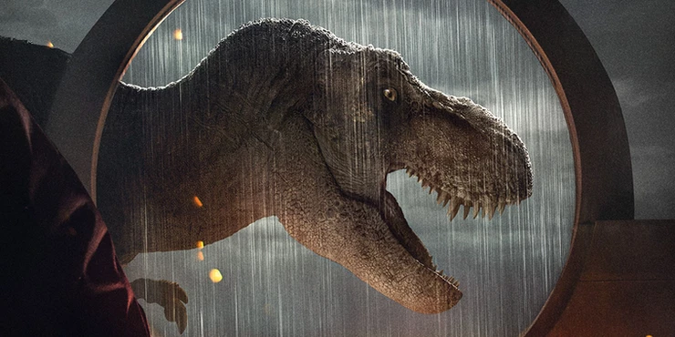
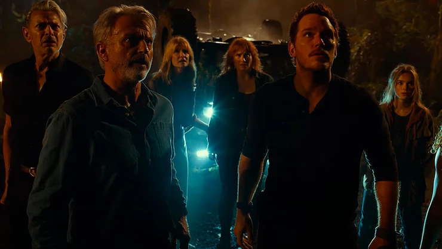
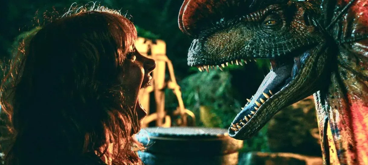
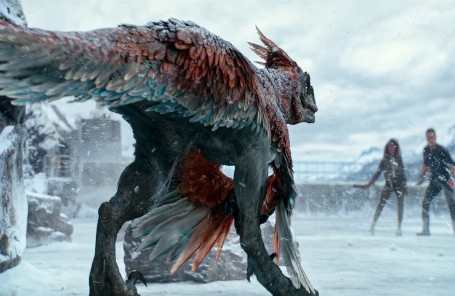

Crítica de Jurassic World: Dominio
Autor(a): Pollyana Maia
Data: 04/06/2022
Tenha muito medo quando um filme estampar “vivencie o final épico” em seu material de divulgação. Existe uma alta probabilidade de tudo ir pelo ralo da forma mais medíocre possível. E aqui, foi, infelizmente. Jurassic World: Domínio encerra de forma preguiçosa, apática e sem sal, uma franquia que voltou até original, teve um satisfatório desenvolvimento em sua sequência, mas que agora derrapa feio no que seria seu maior trunfo: nostalgia.

Anos após os eventos de Jurassic World: Reino Ameaçado (2018), o planeta se vê dividido, literalmente,
em relação à convivência com as recém chegadas espécies, introduzidas de forma não natural, causando, em muitos aspectos,
desequilíbrio na cadeia alimentar que, para quem teve o básico de ecologia do nível médio,
é extremamente perigoso para a manutenção do mundo como conhecemos, sobretudo nos estoques alimentícios, causando falta ou excesso,
dependendo do nível trófico atingido. Até aí, tudo bem. O problema é que toda a discussão que A. Bayona trouxe , aliás, retomou,
em Reino Ameaçado, foi totalmente deixada de lado. A possibilidade de viver harmonicamente com animais já extintos não era mais o
foco do que se esperava no atual filme, como anunciado ao final do filme de meio.
A sensação é que o roteiro estava sendo escrito para algum filme apocalíptico, com uma trama bem batida, sobre a busca por soluções para problemas
alimentícios futuros, semelhante ao que se viu em Interestelar (2014). Provavelmente, Colin Trevorrow leu e pensou “dinheiro fácil”.
Mirou na música de Pink Floyd e acertou em Dire Straits. O roteiro nada mais é do que um jogo noventista do SNES, onde se pega um punhado de protagonista,
pulando de fase em fase, passando pelos bosses, até concluir de forma abrupta, fácil e repetitiva. Aliás, nunca se viu tamanha Blindagem Roteirística (esse termo existe?),
senso de perigo e diálogos cafonas como em Domínio.
Um emaranhado de subtramas são apresentadas ainda nos primeiros 10 minutos, servindo de alicerce para os dois núcleos principais: a ralé, com Owen (Chris Pratt), Claire (Bryce Dallas Howard), Maisie (Isabella Sermon) e Kayla (DeWanda Wise) e a realeza, os Doutores Allan (Sam Neill), Ellie (Laura Dern) e Ian (Jeff Goldblum). Enquanto um grupo sai numa jornada que é claramente suicida, ao resgate de Maisie e de um velociraptorzinho, o outro vai dar as caras na super mega empresa que faz maldade por trás de bondade (extremamente original), visando descobrir o porquê uma praga de gafanhotos do tamanho de Golden Retrievers está dizimando hectares de plantações mundo à fora (porém, só mostram o Texas).
O que era para ser o ponto alto, nostálgico do longa, se perde completamente na teia de edições extremamente rápidas, abruptas, sem nexo. Sim, existe ação, e são cenas tão frenéticas, com uma mixagem tão carregada que podem causar dor de cabeça. É só lembrar da franquia Transformers. Os atores estão em ponto morto: Pratt é aquele mesmo personagem visto em todos os seus filmes, desde Guardiões da Galáxia (2014), Bryce é só apoio, assim como Isabella. O elenco do clássico é bem básico, só cumpre funções que quaisquer outros personagens com iguais habilidades fariam. Porém, a personagem Kayla, da DeWanda Wise é, de longe, a pior de todos os seis filmes: tudo que foi escrito para ela é péssimo. Em suma, todos estão posudos, maquiados, com penteados legais e, claro, sabem que não irão morrer. Aliás, todo o perigo, aqui, se vai, quando o roteiro pede para o personagem mostrar a mão antes do ataque dos dinossauros. Péssimo, péssimo mesmo.
Nem tudo é desastre. Efeitos visuais práticos e digitais continuam sendo o ponto forte da nova franquia. A inserção de dinossauros novos a cada filme é sempre bem-vinda, e quanto maior a agressividade, mais interessante é. Talvez a mancada fique por conta da última hora, totalmente no escuro da noite, propositalmente para ser assustador e, claro, dar aquela enxugada no orçamento. Jurassic World: Domínio é, sim, um filme fraco, não pelas soluções genéricas ou roteiros mastigados e explicativos, que desafiam crianças a entender, mas pela opção em continuar pelo caminho da obviedade citado anteriormente. O próprio Ian Malcom, no terceiro ato, solta piadas infames que mais parecem sair da cabeça de quem está assistindo, questionando o próprio roteiro. Se não existisse um Jurassic Park 3 (2003), facilmente, Domínio estaria na posição de pior da franquia. Mas, aqui, raptores não falam “Allan”, não é mesmo?

2/5